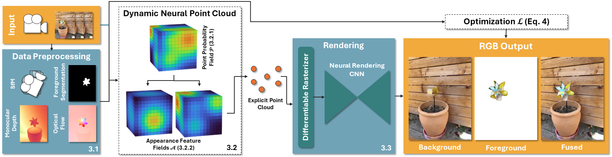

D–NPC: Dynamic Neural Point Clouds
for
Non-Rigid View Synthesis from Monocular Video
Eurographics 2025
-
Moritz Kappel
TU Braunschweig -
Florian Hahlbohm
TU Braunschweig -
Timon Scholz
TU Braunschweig -
Susana Castillo
TU Braunschweig -
Christian Theobalt
MPI for Informatics -
Martin Eisemann
TU Braunschweig -
Vladislav Golyanik
MPI for Informatics -
Marcus Magnor
TU Braunschweig

Interactive live demo captured from our GUI at Full HD resolution.
Abstract
Dynamic reconstruction and spatiotemporal novel-view synthesis of non-rigidly deforming scenes recently gained increased attention. While existing work achieves impressive quality and performance on multi-view or teleporting camera setups, most methods fail to efficiently and faithfully recover motion and appearance from casual monocular captures. This paper contributes to the field by introducing a new method for dynamic novel view synthesis from monocular video, such as casual smartphone captures. Our approach represents the scene as a dynamic neural point cloud, an implicit time-conditioned point distribution that encodes local geometry and appearance in separate hash-encoded neural feature grids for static and dynamic regions. By sampling a discrete point cloud from our model, we can efficiently render high-quality novel views using a fast differentiable rasterizer and neural rendering network. Similar to recent work, we leverage advances in neural scene analysis by incorporating data-driven priors like monocular depth estimation and object segmentation to resolve motion and depth ambiguities originating from the monocular captures. In addition to guiding the optimization process, we show that these priors can be exploited to explicitly initialize our scene representation to drastically improve optimization speed and final image quality. As evidenced by our experimental evaluation, our dynamic point cloud model not only enables fast optimization and real-time frame rates for interactive applications, but also achieves competitive image quality on monocular benchmark sequences.
Method

Given a monocular input RGB video we extract monocular depth, binary foreground segmentation and optical flow from out-of-the-
box estimators to initialize and optimize a dynamic implicit neural point cloud. Our model consists of a
spatiotemporal point position distribution and two feature grids for static and dynamic scene content.
By sampling an explicit point cloud for a discrete timestamp, our model can synthesize novel views,
including foreground/background separation, using a differentiable rasterizer and neural renderer.
Results
Comparisons
Concurrent Work
Please check out the concurrent works casual-fvs and MoSca, which also address fast dynamic view synthesis from causual in-the-wild video. Also, see dpdy, which incorporates diffusion-based priors as additional supervision on the iphone datset.
BibTeX
@article{kappel2024d-npc,
title = {D-{NPC}: Dynamic Neural Point Clouds for Non-Rigid View Synthesis from Monocular Video},
author = {Kappel, Moritz and Hahlbohm, Florian and Scholz, Timon and Castillo, Susana and Theobalt, Christian and Eisemann, Martin and Golyanik, Vladislav and Magnor, Marcus},
howpublished = {arXiv preprint},
year = {2024}
}
Acknowledgements
We thank Jann-Ole Henningson for help with figures and proof reading.
This work was partially funded by the German Research Foundation (DFG) projects “Immersive Digital Reality” (ID 283369270) and “Real-Action VR” (ID 523421583).
The website template was partially adapted from INPC and Zip-NeRF, who borrowed from Michaël Gharbi and Ref-NeRF.